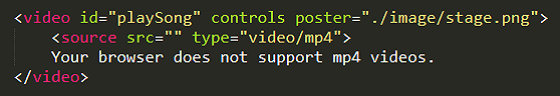
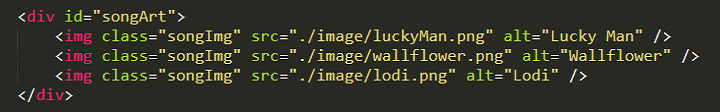
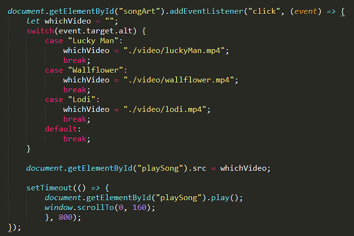

When has enough video loaded to play through?
Or how to eliminate that annoying circular wait arrow.
Here's my solution.
On a site of mine, I've listed a number of videos which the user could pick from to play. They all play at the same location on the page away from where they are selected. So to enhance the viewing experience, I wanted to make sure that enough of the video had been loaded so it would play through before I started to play it.
I looked around for a solution . . . and the closest I found was using the JavaScript "readyState" property which returns a zero (0 HAVE_NOTHING) through four (4 HAVE_ENOUGH_DATA) depending on the amount of data that is loaded. Sure there are other JavaScript properties that provide data about what is happening while the video is playing but only the "readyState" anticipates the playing. It just didn't work consistently for me and the reason may be that each browser handles media loading its own way. This goes back to the indecisiveness when the HTML5 <video> element was created.
A good stab at it was done by Mike Thomas who matched this property with the setTimeout function in order to watch the loading of the video and tell when to start the play function. His solution can be found at this link. At the bottom of the page, he discusses the "readyState" and references the MDN page defining it. I just didn't find it consistent enough for me either.
But I did end up using the setTimeout function as part for my solution. So let's get to my solution.

First I need a place to play the videos. And to the video element I've added the controls and a poster to take the place of the video when one is not playing.

Next, I need a listing of the songs/videos available for user to select from.
